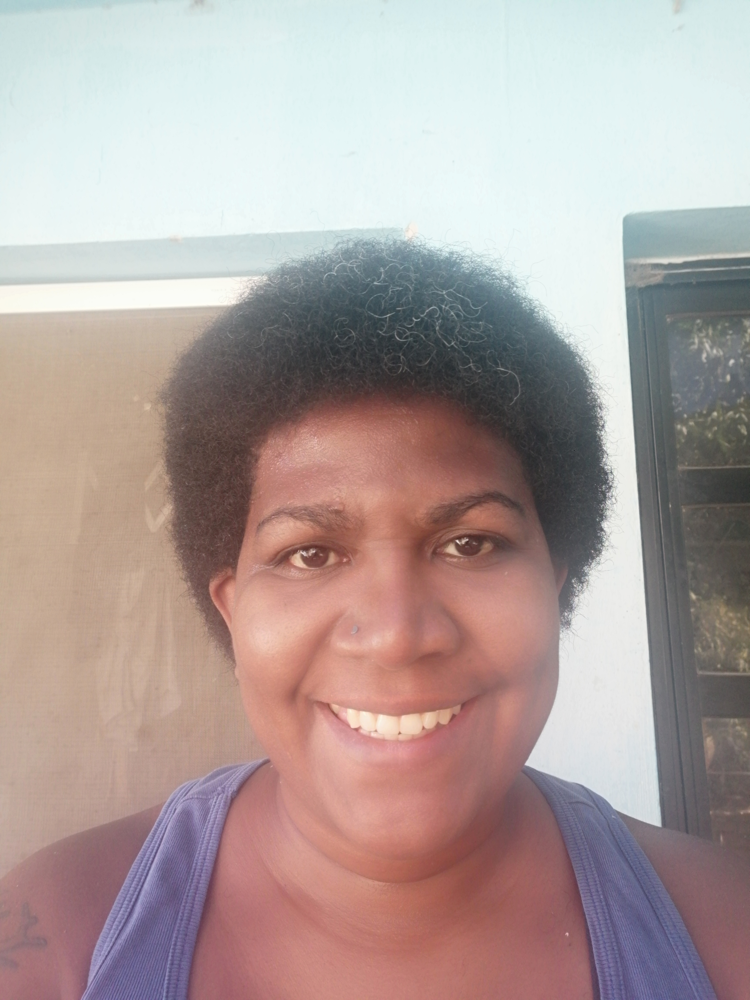

Hola! Soy Anais
Saludos, mi nombre es Anais Escalona, soy Terapeuta Ocupacional Venezolana, con 20 años de experiencia,
trabajo con personas con diversos trastornos, neurológicos y psiquiátricos, en su mayoría adultos.
Cuando se trata de niños, tengo experiencia en niños con sindrome de Down e inmadurez del sistema nervioso
Hablemos!
Puedes contactarme a traves de distintas vías, con la finalidad de ofrecerle atención de calidad
a personas de la tercera edad, a niños con inmadurez del sistema nervioso o personas con secuela
de ACV, para recuperar la marcha.